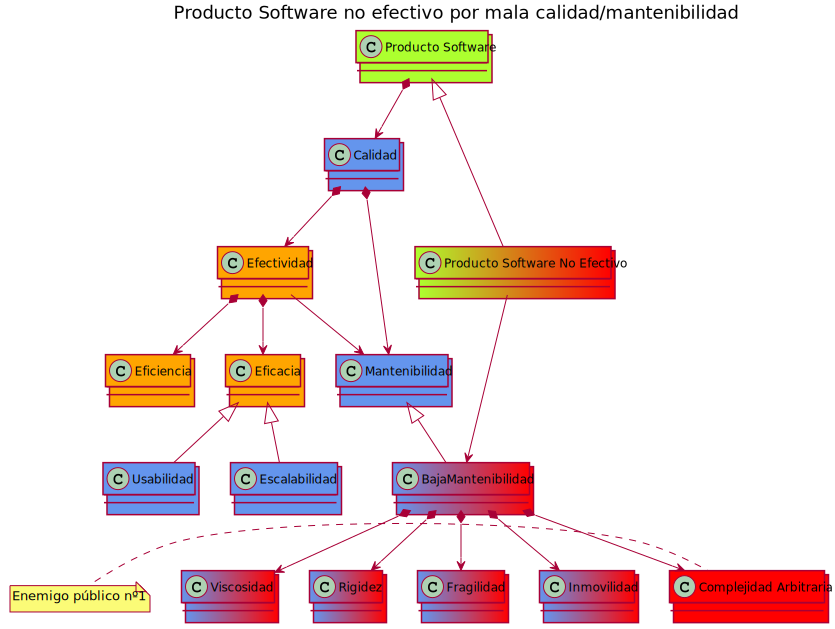
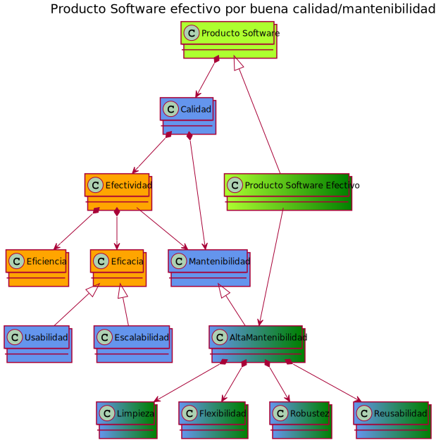
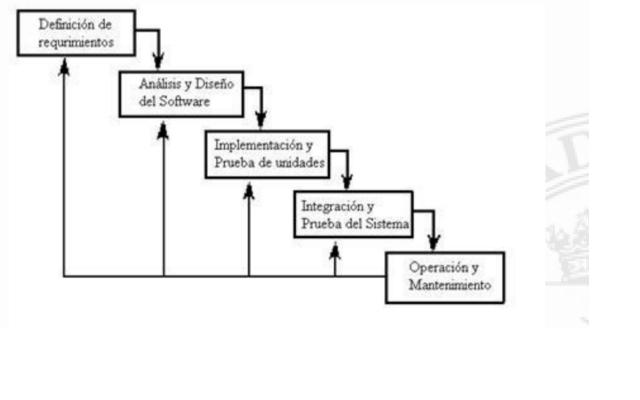
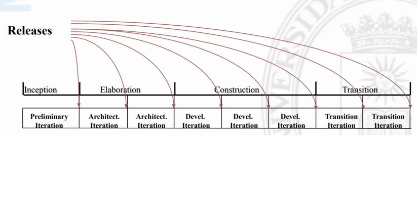
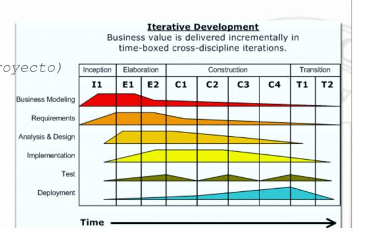
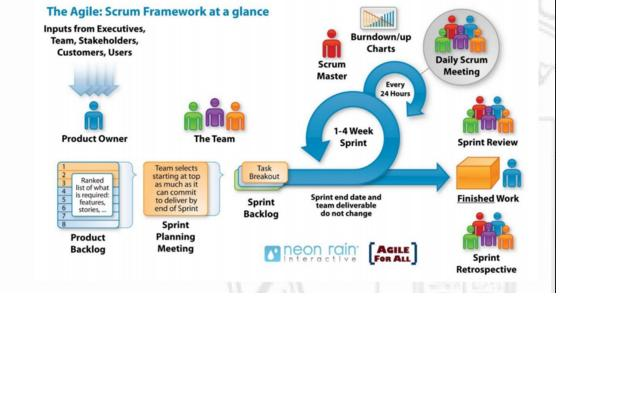

Justificación: ¿Por qué?
Crisis del Software
-
La Crisis del Sotfware es la incapacidad para dominar la complejidad de los proyectos software que
-
Provocó la reunión en la OTAN en 1968 por parte de Bauer, Dijkstra, Backus, Naur, …, Wirth, Zimmermann!!! que comenzaron la definición del lenguaje ALGOL, inspirador de otros muchos! se entregan tarde, con deficiencias funcionales y por encima del presupuesto, conocidos como proyectos fracasados o problemáticos.
-
Incluyendo accidentes que conllevaron a la muerte de tres personas en la máquina de radioterapia Therac-25 que emitió una sobredosis masiva de radiación u otros con pérdidas multimillonarias
-
-
| Motivos de Proyectos Fracasados/Problemáticos | Incidencia |
|---|---|
|
|
-
Estadísticas de Standish Group sobre 50.000 proyectos

La complejidad del software es una propiedad esencial, no un accidente. Por esencial queremos decir que podemos dominar esta complejidad, pero nunca podemos hacer que se vaya. […] A menudo llamamos esta condición la crisis del software, pero, francamente, una enfermedad que se ha llevado a los largo de este tiempo debe ser llamado normalidad
Economía del Software
Nueve mujeres no pueden tener un bebé en un mes
— Brooks
Dieciocho mujeres aún no pueden tener un bebé en un mes |

|
Tiempo
-
Las restricciones de controlar proyectos controlando el tiempo, generalmente vienen de fuera, de las manos del cliente
-
Si damos a un proyecto poco tiempo, la calidad sufre, con el ámbito.
-
Disponer de más tiempo para la entrega puede mejorar la calidad e incrementar el ámbito.
-
Ya que la realimentación desde los sistema en producción es de mayor calidad que cualquier otra clase de realimentación, dar a un proyecto demasiado tiempo será perjudicial.
-
-
Si la mayoría de los proyectos de tu organización son obsesivamente cortos, proyectos conducidos por el calendario, hay algo muy, muy malo. Cambios radicales en la organización del proceso de desarrollo software son necesarios, antes de que la compañía o su gente se arruine.
Object Solutions
Ámbito
-
Es la más importante a tener en cuenta
-
Naturaleza del Ámbito
-
Poco ámbito permite entregar más rápido, mas calidad (mientras el problema del cliente esté resuelto) y más barato
-
Ámbito muy variable (Ley del Cambio Continuo):
-
Porque los programadores y el personal del negocio no tienen más que una idea vaga sobre lo que tiene valor en el software que se está desarrollando.
-
Porque los requisitos nunca están claros al principio y los clientes no pueden decirnos exactamente lo que quieren. El desarrollo de una pieza de software cambia sus propios requisitos ya que tan pronto como el cliente ve la primera versión, aprenden lo que quieren para la segunda versión … o lo que realmente querían en la primera. Y esto es un aprendizaje valioso, porque no hay posibilidades de especulación. Este aprendizaje solamente puede venir de la experiencia. Pero los clientes no pueden estar solos, necesitan gente que pueda programar, no como guías, sino como compañeros.
-
-
-
Gestión del Ámbito
-
Si se gestiona activamente el ámbito, se puede proporcionar a los directores de proyecto y clientes control sobre el coste, calidad y tiempo.
-
Intentando no hacer demasiado, mantenemos nuestra capacidad de producir la calidad requerida en un tiempo determinado.
-
Eliminación del ámbito es una de las decisiones más importantes en la gestión del proyecto
-
Si el tiempo está limitado por la fecha de lanzamiento de una versión, hay siempre algo que podemos diferir a la siguiente versión.
-
Si dejas fuera importante funcionalidad al final de cada ciclo de versión, el cliente quedará disgustado. Para evitar esto, se utilizan dos estrategias:
-
Implementa en primer lugar los requisitos más importantes del cliente, de tal manera que si se deja después alguna funcionalidad, es menos importante que la funcionalidad que ya está incorporada al sistema
-
Consigue mucha práctica haciendo estimaciones y realimentando los resultados reales. Mejores estimaciones reducen la probabilidad de que tengas que dejar fuera funcionalidad
-
-
-
Coste
-
Al comienzo de un proyecto no puedes gastar mucho, la inversión tiene que comenzar siendo pequeña y crecer con el tiempo. Después, se puede de forma productiva gastar más y más dinero.
-
Mucho dinero puede engrasar la maquinaria un poco, pero demasiado dinero pronto crea más problemas que resuelve. Mayores costes a menudo alimentan objetivos tangenciales, como estatus o prestigio (- "Tengo un proyecto de 150 personas!"" - y respira profundamente”)
-
Dentro del rango de inversión que pueda sensatamente hacerse, gastando más dinero puedes aumentar el ámbito, o puedes intentar de forma más deliberada aumentar la calidad, o puedes (hasta cierto punto) reducir el tiempo de salida al mercado. También puede reducir las desavenencias: máquinas más rápidas, más especialistas técnicos, mejores oficinas.
-
Muy poco dinero, no permite resolver el problema del negocio del cliente
-
Todas las restricciones sobre el coste pueden volver locos a los directores de proyecto. Especialmente si están sujetos a un proceso de presupuesto anual, están tan acostumbrados a considerarlo todo desde la perspectiva del coste y cometerán grandes errores al ignorar las restricciones sobre cuánto control te proporciona el coste.
-
-
Calidad
-
Hay una extraña relación entre la calidad interna (que miden los programadores) y externa (que mide el cliente).
-
Sacrificar temporalmente la calidad interna para reducir el tiempo de salida al mercado del producto, con la esperanza que la calidad externa no se vea muy dañada es tentador a corto plazo. Y puedes con frecuencia hacerlo impunemente generando una confusión en cuestión de semanas o meses. Al fin y al cabo, los problemas de calidad interna te alcanzan a ti y hacen que tu software sea prohibitivamente caro de mantener.
-
A menudo, al insistir en la mejora de la calidad puedes hacer que el proyecto esté listo en menos tiempo, o puedes conseguir hacer más en un una cantidad de tiempo dada. Se trabaja mejor si no se desmoraliza al producir software basura.
-
Interrelación
-
No hay una relación sencilla entre las cuatro variables.
-
Por ejemplo, no puedes obtener software más rápido, gastando más dinero
-
La forma de hacer en este modelo del juego del desarrollo del software es que las fuerzas externas (clientes, directores de proyecto) eligen los valores de tres variables cualquiera. El equipo de desarrollo determina el valor resultante de la cuarta variable
— Beck
1999 |
Algunos directores de proyecto y clientes creen que pueden escoger el valor de las cuatro variables. Cuando esto suceda, la calidad siempre desaparecerá, ya que nadie hace bien el trabajo cuando está sujeto a una fuerte presión. También, probablemente, el tiempo estará fuera de control
— Beck
1999 |
Calidad del Software
|

|
|

|

Definición: ¿Qué?
Ingeniería de software es la aplicación práctica del conocimiento científico al diseño y construcción de programas de computadora y a la documentación asociada requerida para desarrollar, operar y mantenerlos. Se conoce también como desarrollo de software o producción de software
1976
Proceso de Desarrollo Software: el conjunto total de actividades necesarias para transformar los requerimientos del cliente en un conjunto consistente de artefactos que representan un producto software y, en un momento posterior, para transformar los cambios de estos requerimientos en una nueva versión del producto software.
1985
| Ingeniería | Actividad | Ordenación |
|---|---|---|
El software es sagrado
— Booch
… y requiere de un ritual |
|
|
Objetivos: ¿Para qué?
|

|
|

|
Descripción: ¿Cómo?
Sistema Complejo
El desarrollo de un proyecto software tiene una complejidad particular por las siguientes razones:
La complejidad del dominio del problema
-
Los problemas que tratamos de resolver en el software a menudo implican elementos de complejidad ineludible, en las que encontramos una gran variedad requisitos que pueden ser contradictorios, ambiguos u omitidos.
-
Una complicación adicional es que los requisitos de un sistema de software a menudo cambian durante su desarrollo (Ley del Cambio Continuo que conduce a la Ley de la Complejidad Creciente)
Las limitaciones de la capacidad humana
-
Numero mágico de Miller (7+-2), Ley de Shyk
La posible flexibilidad a través del software
-
No existen muchos estándares en la industria del software como en la industria de la construcción que tiene códigos y estándares para la calidad de las materias primas de construcción.
-
Como resultado, el desarrollo de software sigue siendo una empresa de trabajo intensivo.
-
El comportamiento de los sistemas discretos
-
Dentro de una aplicación grande, puede haber cientos o incluso miles de variables, así como más de un hilo de control. Toda la colección de estas variables, sus valores actuales y su dirección actual y la pila de llamadas de cada proceso dentro del sistema constituyen el estado actual de la aplicación.
-
Por desgracia, es absolutamente imposible para una sola persona realizar un seguimiento de todos estos detalles a la vez. Este es el problema de la caracterización del comportamiento de los sistemas discretos.
-
La dificultad de gestionar el proceso de desarrollo
-
La gran cantidad de requisitos de un sistema a veces es inevitable y nos obliga a escribir una gran cantidad de software nuevo o volver a utilizar el software existente en formas novedosas.
-
Hace tan sólo unas décadas, los programas en lenguaje ensamblador de sólo unos pocos miles de líneas de código subrayaron los límites de nuestras capacidades de ingeniería de software.
-
Hoy en día, no es raro encontrar sistemas entregados cuyo tamaño se mide en cientos de miles o incluso millones de líneas de código, y todo eso en un lenguaje de programación de alto nivel
-
Analogía: El Quijote de la Mancha, unas 300.000 palabras, escrito por 8 personas a la vez en 6 meses a partir de la idea de otra persona! frente a los 18 años que tardó en escribirlo Miguel de Cervantes
-
-
| Prolemas por la Complejidad del Desarrollo Software | Disciplina de la Ingeniería del Software |
|---|---|
La complejidad del dominio del problema |
Requisitos |
Las limitaciones de la capacidad humana para el tratamiento de la complejidad |
Mantenibilidad del Software del Análisis y Diseño |
La posible flexibilidad a través del software |
Reusabilidad del Software del Análisis y Diseño |
Los problemas de la caracterización del comportamiento de los sistemas discretos |
Pruebas y Despliegue |
La dificultad de gestionar el proceso de desarrollo |
Gestión |
Disciplinas
Requisitos
-
La disciplina de requisitos es el flujo de trabajo, incluyendo actividades, trabajadores y documentos, cuyo propósito principal es dirigir el desarrollo hacia el sistema correcto al describir los requisitos del sistema así que pueda alcanzarse un acuerdo entre los clientes, usuarios y desarrolladores sobre lo que el sistema debería hacer:
-
Establecer y mantener el acuerdo entre los clientes y otros interesados (stakecholders – gerencia, marketing, usuarios, …) sobre lo que el sistema debería hacer
-
Proveer a los desarrolladores del sistema con una mejor comprensión de los requisitos del sistema
-
Definir los límites del sistema
-
Proveer las bases para planificar los aspectos técnicos del desarrollo
-
Proveer las bases para estimar los costes y tiempos para desarrollar el sistema
-
Análisis
-
La disciplina de análisis es el flujo de trabajo, incluyendo trabajadores, actividades y documentos, cuyo principal objetivo es analizar los requisitos a través de su refinamiento y estructura para realizar una compresión más precisa de los requisitos, una descripción de los requisitos que es fácil de mantener y ayuda a estructurar el sistema:
-
Dar una especificación más precisa de los requisitos obtenidos en la captura de requisitos
-
Describir usando el lenguaje de los desarrolladores y poder introducir más formalismo y ser utilizado para razonar sobre el funcionamiento interno del sistema
-
Estructurar los requisitos de manera que facilite su comprensión, cambiándolos y, en general, mantenerlos
-
Acercase al diseño, aunque sea un modelo en sí mismo, y es por tanto un elemento esencial cuando el sistema está conformado en diseño e implementación
-
Requisitos |
Análisis |
Descrito usando el lenguaje del cliente |
Descrito usando el lenguaje de los desarrolladores (diagramas de clases) |
Visión externa del sistema |
Visión interna del sistema |
Estructurado por requisitos, da estructura a la vista externa |
Estructurado por clases estereotipadas y paquetes, da estructura a la vista interna |
Usado principalmente como contrato entre los clientes y los desarrolladores sobre lo que el sistema debería hacer |
Usado principalmente por desarrolladores para comprender qué forma debería tener el sistema |
Contiene muchas redundancia, inconsistencias, .. entre los requisitos |
No debería contener redundancias, inconsistencias, … entre los requisitos |
Captura la funcionalidad del sistema, incluyendo funcionalidad arquitectónica significativa |
Esboza cómo realizar la funcionalidad en el sistema, incluyendo la funcionalidad arquitectónica significativa; |
Diseño
-
La disciplina de diseño es el flujo de trabajo, incluyendo actividades, trabajadores y documentos, cuyo principal propósito es desarrollar enfocados en los requisitos no funcionales y en el dominio de la solución para preparar para la implementación y pruebas del sistema:
-
Adquirir una comprensión profunda sobre los aspectos de los requisitos no funcionales y limitaciones relacionadas con:
-
los lenguajes de programación,
-
la reutilización de componentes,
-
sistemas operativos,
-
tecnologías de distribución y concurrencia,
-
tecnologías de bases de datos,
-
tecnologías de interfaz de usuario,
-
tecnologías de gestión de transacciones,
-
y así sucesivamente
-
Análisis |
Diseño |
Modelo conceptual porque es una abstracción del sistema y evita cuestiones de implementación |
Modelo físico porque es un esbozo de la implementación |
Menos formal |
Más formal |
Diseño genérico, aplicable a varios diseños concretos |
No es genérico sino específico para una implementación |
Tres estereotipos conceptuales en las clases: modelo, vista, controlador |
Cualquier número de estereotipos físicos en las clases, dependiendo del lenguaje de implementación |
Menos costoso para el desarrollo (1:5 frente al diseño) |
Más costoso para el desarrollo (5:1 frente al análisis) |
Pocas capas arquitectónicas |
Muchas capas arquitectónicas |
Puede no ser mantenido a través de todo el ciclo de vida del software |
Debería ser mantenido a través de todo el ciclo de vida del software |
Principalmente creado en trabajo de campo, talleres y similares |
Principalmente creado por “programación visual” (ingeniería directa e inversa) |
Define la estructura que es la entrada esencial para dar forma al sistema, incluyendo la creación del modelo de diseño |
Dar forma al sistema mientras intenta preservar la estructura definida por el modelo de análisis |
Enfatiza la investigación del problema y sus requisitos |
Enfatiza en la solución conceptual que cubra los requisitos más que en su implementación |
Haz lo correcto |
Hazlo correctamente |
Implementación
-
La disciplina de implementación es el flujo de trabajo, incluyendo actividades, trabajadores y documentación, cuyo principal propósito es implementar el sistema en términos de componentes, p.ej. código, scripts, ficheros binarios, código ejecutables:
-
Definir la organización del código en términos de subsistemas de implementación organizados en capas
-
Implementar las clases y objetos en términos de componentes
-
Probar el desarrollo de componentes como unidades
-
Integrar en un sistema ejecutable el resultado producido por implementadores individuales o equipos
-
Pruebas
-
La disciplina de pruebas es el flujo de trabajo, incluyendo actividades, trabajadores y documentación, cuyo principal propósito es comprobar el resultado de la implementación al probar cada versión, incluyendo internas e intermedias, y versiones finales del sistema a entregar:
-
Encontrar y documentar fallos en el producto software: defectos, problemas, …
-
Avisar a la gestión sobre la calidad del software percibida
-
Evaluar las asunciones hechas en el diseño y especificación de requisitos a través de demostraciones concretas
-
Validar que el software trabaja como fue diseñado
-
Validar que los requisitos son implementados apropiadamente
-
Despliegue
-
La complejidad del software justifica la necesidad de herramientas que aceleren su producción, controlen su calidad y monitoricen su gestión a lo largo de todas las disciplinas de la ingeniería del software
-
El ecosistema es un conjunto de servicios integrados orientados al desarrollo de software y su objetivo es mejorar la coordinación y el trabajo realizado por el equipo de desarrollo.
-
| Disciplina | Necesidad | Herramientas |
|---|---|---|
Requisitos |
Se requiere un entorno colaborativo con editores, historial, autoría, respaldos, … donde los especificadores de requisitos (casos de uso / historias de usuario) puedan escribir y el resto del equipo de desarrollo (analistas/diseñadores, programadores, probadores y desplegadores) puedan leer dichos requisitos centralizados |
Wiki de GitHub |
Análisis y Diseño |
Se requiere de una herramienta CASE *(Computer Aided Software Engineering) que facilite la edición de *diagramas de análisis y diseño (diagramas de casos de uso, clases,objetos, paquetes, secuencia, colaboración, estados y actividades, implementación y despliegue) junto con su trazabilidad |
MagicDraw |
Análisis y Diseño |
Se requiere de una herramienta de métricas del software que determine automáticamente el grado de bondad de los componentes de la arquitectura del software |
SonarQube |
Programación |
Se requiere un entorno de desarrollo integrado para la edición, compilación, ejecución, … del código en desarrollo en la máquina local |
Eclipse |
Programación |
Se requiere ayudas para el cumplimiento de las reglas de estilo (formato, identificadores, …) dadas en la arquitectura del software |
Eclipse, Checkstyle, PMD, FindBugs y Sonarqube |
Programación |
Se requiere, en el contexto de metodologías ágiles, ayudas para automatizar en lo posible la refactorización del código (renombrado de identificadores, nombrar constantes, mover métodos, …) |
Eclipse |
Programación |
Se requiere un sistema de registro para gestionar (escritura, destino, avisos, …) los mensajes de trazas, depuración, errores, …) durante la ejecución |
Log4j |
Programación |
Se requiere de un sistema de control de versiones del repositorio de código común del proyecto para facilitar la gestión (actualizaciones, vuelta atrás, mezclas, …) de la rama de desarrollo, la rama de entregas, la rama de producción |
GitHub |
Pruebas |
Se requiere un sistema para la gestión de pruebas que facilite la edición, ejecución, evaluación, … de la pruebas |
Junit, Selenium, … |
pruebas |
Se requiere de un sistema de integración continua para comprobar que el código y las pruebas funcionan tras cualquier cambio |
Travis |
Pruebas |
Se requiere un sistema de cobertura de pruebas que facilite la misión y estrategias de pruebas |
SonarQube |
Despliegue |
Se requiere un gestor de proyectos para la automatización, en lo posible, de la construcción de entregables (compilación, pruebas, reglas de estilo, empaquetado, …) |
Maven |
Gestión |
De proyectos se requiere una herramienta para gestión de tickets que permitan la asignación de tareas con su tiempo estimado y real, finalización por parte del asignado y cierre tras la comprobación por el emisor de la tarea |
Tickets de GitHub |
Proceso de Desarrollo Software
-
Mal llamado anteriormente como Metodología, cuando debió ser Método! y determina la disciplina de Gestión.
-
La diferencia entre un Proceso de Desarrollo Software y otros radica en el orden, grado y técnicas en que se acometen las actividades de las distintas Disciplinas de la Ingeniería del Software
-
Proyecto Software
-
Visión inicial, partido en dos fases de distinta naturaleza:
-
Producción: desde la toma de Requisitos a la primmera entrega para explotación con los requisitos de partida
-
Mantenimiento: desde la primera entrega hasta la última para su explotación con los nuevos requisitos
-
Mantenimiento correctivo, para corregir defectos
-
Mantenimiento perfectivo, para modificar la funcionalidad
-
Mantenimiento adapativo, para aceptar nuevas tecnologías, …
-
-
-
Visión actual, un continuo de iteraciones de la misma naturaleza
-
Desarrollo, Evolución: desde la toma de Requisitos hasta la última entrega para su explotación con los nuevos requisitos
-
-

-
Analogía: el desarrollo software es como criar a un hijo; la producción del software sería la gestación del niño, que es un periodo vital en el crecimiento del hijo; el mantenimiento del software sería la educación del niño, que es un periodo largo y muy sorprendente que depende de la gestación y crianza previas
Proceso de Desarrollo Software en Cascada
|

|
| Desventajas | Ventajas |
|---|---|
|
|
Proceso de Desarrollo Software Iterativo
-
Iteración: Un conjunto distinto de actividades llevado a cabo de acuerdo con un plan dedicado (iteración) y criterios de evaluación que se traduce en una entrega, ya sea interna o externa.
-
Incremento: Una parte del sistema pequeña y manejable, por lo general, la diferencia entre dos construcciones sucesivas.
-
Cada iteración se traducirá en al menos una nueva construcción y, por lo tanto, se añadirá un incremento en el sistema.
-
Planificar de un poco. Especificar, diseñar e implementar un poco. Integrar, probar y ejecutar un poco en cada iteración
— Booch
|
|

|
-
Entrega. Un conjunto de artefactos (documentos y posiblemente una construcción ejecutable) relativamente complete y consistente entregada a usuarios externos o internos
-
Entrega interna. Una entrega no expuesta a los clientes y usuarios pero sí internamente solo para el proyecto y sus miembros
-
Entrega externa. Una entrega expuesta a clientes y usuarios externos al proyectos y sus miembros.
-
| Desventajas | Ventajas |
|---|---|
|
|
Proceso de Desarrollo Software Pesadas
-
En 1998, Grady Booch, Ivar Jacobson y Rumbaugh unifican sus metodologías y publican Rational Unified Process (RUP), un marco metodológico para grandes y pequeños proyectos
* DO {
** Requisitar
** Analizar
** Diseñar
** Programar
** Probar
** Desplegar
* } WHILE (finProyecto)
|

|
Proceso de Desarrollo Software Ágil
-
En 2001, en Utah (EEUU), se reúnen un grupo de expertos, Kent Beck de eXtreme Programming (XP), Martin Fowler, Robert Martin, … para defender un nuevo paradigma de desarrollo software: http://agilemanifesto.org/iso/es/manifesto.html
* DO {
** Sprint Planning Meeting: Requisitar-Analizar
** Test Driven Development: Probar-Diseñar la interfaz-Programar
*** Refactoring: Re-diseñar, re-programar la implementación y re-probar
** Continuous Integration and Deploy: Desplegar
* } WHILE (finProyecto)
|

|
Comparativa RUP vs XP
| RUP | XP |
|---|---|
Gestión de documentación de requisitos, análisis y diseño: pesadas/ligeras |
Poca documentación porque la mejor documentación es el código: ligeras |
Con estimaciones del tiempo y coste del proyecto entero |
Sin estimaciones del tiempo ni coste del proyecto entero |
Planificación a largo plazo y revisiones del plan en cada iteración |
Planificación de la iteración actual pero sin previsión a largo plazo |
Entrevistas con el cliente durante las primeras iteraciones y en cada entrega |
Entrevistas con el cliente durante todo el proyecto, cliente in situ parte del proyecto |
Desarrollo priorizado por riesgos técnicos, políticos, … |
Desarrollo priorizado por el valor de retorno al cliente |
Roles especializados por desarrollador |
Desarrolladores multidisciplinares |
Diseño de la Arquitectura propuesta previa al desarrollo |
Arquitectura emergente según se re-diseña (TDD y refactoring) |
Bibliografía
| Obra, Autor y Edición | Portada | Obra, Autor y Edición | Portada |
|---|---|---|---|
|

|
|

|
|

|
|

|
|

|
|

|
|

|
|

|
|

|
|

|